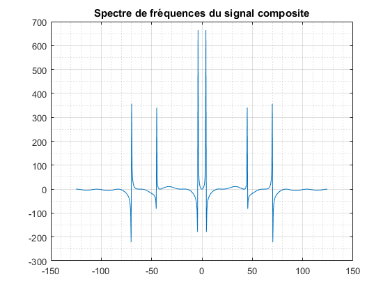

Contents
type TFD.m;
function [f0,fdata] = TFD(Fe,data)
m = length(data);
n = pow2(nextpow2(m));
f0 = (-n/2:n/2-1)*(Fe/n);
fdata = fftshift(fft(data,n));
end
Exercice 1 : Signaux Simples
X=[0:(pi/13):(7*pi)];
Y=sin(X);
C=2.8*ones(1,length(X));
a=sqrt(0.4);
b=0.1;
B=a*randn(1,length(X))+b;
Z = Y+C+B;
M = mean(Z);
disp('Mean : ');
disp(M);
V = var(Z);
disp('Variance : ');
disp(V);
figure;
plot(X,Y,X,C,X,B,X,Z);
legend('Sinus','Constant','Gaussien','Sum');
grid on;
title('Signaux Simples');
Mean :
3.0839
Variance :
0.9814
Exercice 2 : Echantillonnage
figure;
F=[20,75,100,160,180,330];
for index = 1:length(F)
t=[0:1/F(1,index):1];
Y=2*sin(165*pi*t) + 13*cos(6*pi*t) - 3*cos(80*pi*t);
subplot(length(F),1,index);
plot(t,Y);
title(strcat('Echantillonage : ',int2str(F(1,index))));
ylim([-20 20]);
xlabel('Time (sec)');
end
Exercice 3: Analyse spectrale
Fe = 250;
p = 1/Fe;
t = [0:p:2];
Y1 = 5*sin(2*pi*4*t);
Y2 = 3*sin(2*pi*45*t);
Y3 = 2*sin(2*pi*70*t);
figure;
plot(t,Y1,t,Y2,t,Y3);
title('Les trois signaux sinusoidales');
legend('Y1','Y2','Y3');
xlabel('Time (sec)');
ylabel('Y');
grid minor;
grid on;
Z = Y1+Y2+Y3;
figure;
plot(t,Z);
title('La somme trois signaux sinusoidales');
xlabel('Time (sec)');
ylabel('Y');
grid minor;
grid on;
[f0,FY1] = TFD(Fe, Y1);
[f1,FY2] = TFD(Fe, Y2);
[f2,FY3] = TFD(Fe, Y3);
figure;
plot(f0,FY1, f0,FY2, f0,FY3);
title('Spectre de fréquences');
legend('FFT Y1','FFT Y2','FFT Y3');
grid minor;
grid on;
[f0,FZ] = TFD(Fe, Z);
figure;
plot(f0,FZ);
title('Spectre de fréquences du signal composite');
grid minor;
grid on;
Warning: Imaginary parts of complex X and/or Y arguments ignored
Warning: Imaginary parts of complex X and/or Y arguments ignored

Exercice 4
[data,Fe] = audioread('Audio.wav');
audio = audioplayer(data, Fe);
[f0,Fdata] = TFD(Fe,data);
figure;
plot(f0,Fdata);
title('Spectre du signal audio original');
grid minor;
grid on;
xlabel('Frequence');
ylabel('Amplitude');
fc = 900;
n = 128;
b = fir1(n,fc/(Fe/2),'low');
lowpassaudio = filter(b,1,data);
[f0,Fdata] = TFD(Fe,lowpassaudio);
figure;
plot(f0,Fdata);
title('Spectre du signal audio avec filtre passe bas n=128');
grid minor;
grid on;
xlabel('Frequence');
ylabel('Amplitude');
audio = audioplayer(lowpassaudio, Fe);
fc = 250;
L = 1200;
[b_cheby,a_cheby] = fir1(n,fc/(Fe/2),'high',chebwin(n+1,30));
dataout = filter(b_cheby,a_cheby,data);
[f0,Fdata] = TFD(Fe,dataout);
figure;
plot(f0,Fdata);
title('Spectre du signal audio avec filtre Chebychev passe Haut n=128');
grid minor;
grid on;
xlabel('Frequence');
ylabel('Amplitude');
[b_hamm,a_hamm] = fir1(n,fc/(Fe/2),'high',hamming(n+1));
dataout = filter(b_hamm,a_hamm,data);
[f0,Fdata] = TFD(Fe,dataout);
figure;
plot(f0,Fdata);
title('Spectre du signal audio avec filtre Hamming passe Haut n=128');
grid minor;
grid on;
xlabel('Frequence');
ylabel('Amplitude');
[b_black,a_black] = fir1(n,fc/(Fe/2),'high',blackman(n+1));
dataout = filter(b_black,a_black,data);
[f0,Fdata] = TFD(Fe,dataout);
figure;
plot(f0,Fdata);
title('Spectre du signal audio avec filtre Blackman passe Haut n=128');
grid minor;
grid on;
xlabel('Frequence');
ylabel('Amplitude');
hd_cheby = dfilt.dffir(b_cheby);
hb_hamm = dfilt.dffir(b_hamm);
hb_black = dfilt.dffir(b_black);
hd = [hd_cheby hb_hamm hb_black];
freqz(hd);
xlim([0 0.1]);
legend('Chebychev','Hamming','Blackman');
grid minor;
grid on;
chebyFiltered = filter(b_cheby,a_cheby,lowpassaudio);
hammFiltered = filter(b_hamm,a_hamm,lowpassaudio);
blackFiltered = filter(b_black,a_black,lowpassaudio);
[f0,FdataCheby] = TFD(Fe,chebyFiltered);
[f1,FdataHamm] = TFD(Fe,hammFiltered);
[f2,FdataBlack] = TFD(Fe,blackFiltered);
figure;
plot(f0,FdataCheby );
ylim([-500 500]);
xlim([-1500 1500]);
title('Spectre du signal audio filtré avec Chebychev');
legend('TFD Chebychev');
grid minor;
grid on;
xlabel('Frequence');
ylabel('Amplitude');
figure;
plot(f0,FdataHamm);
ylim([-500 500]);
xlim([-1500 1500]);
title('Spectre du signal audio filtré avec Hamming');
legend('TFD Hamming');
grid minor;
grid on;
xlabel('Frequence');
ylabel('Amplitude');
figure;
plot(f0,FdataBlack );
ylim([-500 500]);
xlim([-1500 1500]);
title('Spectre du signal audio filtré avec Blackman');
legend('TFD Blackman');
grid minor;
grid on;
xlabel('Frequence');
ylabel('Amplitude');
Warning: Imaginary parts of complex X and/or Y arguments ignored
Warning: Imaginary parts of complex X and/or Y arguments ignored
Warning: Imaginary parts of complex X and/or Y arguments ignored
Warning: Imaginary parts of complex X and/or Y arguments ignored
Warning: Imaginary parts of complex X and/or Y arguments ignored
Warning: Imaginary parts of complex X and/or Y arguments ignored
Warning: Imaginary parts of complex X and/or Y arguments ignored
Warning: Imaginary parts of complex X and/or Y arguments ignored